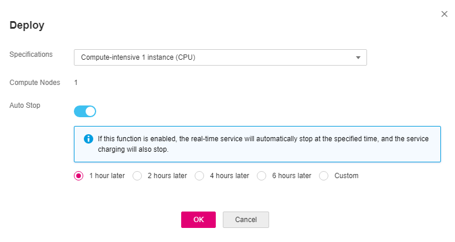

Deploying a Model
You can deploy a model as a real-time service that provides a real-time test UI and monitoring capabilities. After model training is complete, you can deploy a version with the ideal accuracy and in the Successful status as a service. The procedure is as follows:
- On the Train Model tab page, wait until the training status changes to Completed. Click Deploy in the Version Manager pane.
- In the displayed Deploy dialog box, set Specifications, and click OK to deploy the model as a real-time service.
- Specifications: Compute-intensive 1 instance (CPU) are supported.
- Compute Nodes: The default value is 1 and cannot be changed.
- Auto Stop: After this parameter is enabled and the auto stop time is set, a service automatically stops at the specified time. If this parameter is disabled, a real-time service is always running and billed. The function can help you avoid unnecessary charges. The auto stop function is enabled by default. The default value is 1 hour later.
Currently, the options are 1 hour later, 2 hours later, 4 hours later, 6 hours later, and Custom. If you select Custom, you can enter any integer from 1 to 24 hours in the text box on the right.
Figure 1 Deploying a service
 - After the model is deployed, view the model deployment status on the Service Deployment page.
The deployment takes a certain period of time. If the status in the Version Manager pane changes from Deploying to Running, the deployment is complete.
Testing a Service
- On the Service Deployment page, select a service type. For example, on the ExeML page, the predictive analytics model is deployed as a real-time service by default. On the Real-Time Services page, click Prediction in the Operation column of the target service to perform a service test. For details, see Testing a Service.
- You can also use code to test a service. For details, see Accessing a Real-Time Service.
- The following describes the procedure for performing a service test after the predictive analytics model is deployed as a service on the ExeML page.
- After the model is deployed, you can test the model using code. On the ExeML page, click the target project, go to the Deployment Online tab page, select the service version in the Running state, and enter the code in the Code area.
- Click Prediction to perform the test. After the prediction is complete, the result is displayed in the Return Result area on the right. If the model accuracy does not meet your expectation, train and deploy the model again on the Label Data tab page. If you are satisfied with the model prediction result, call the API to access the real-time service as prompted. For details, see Accessing a Real-Time Service.
- attr_1 to attr_7 indicate the input data. On the Label Data tab page, the selected label column is attr_7, that is, attr_7 is the target column to be predicted. The value of attr_7 can be set to any value or left blank, which does not affect the prediction result.
1 2 3 4 5 6 7 8 9 10 11 12 13 14 15 16 17 18
{ "data": { "count": 1, "req_data": [ { "attr_1": "58", "attr_2": "management", "attr_3": "married", "attr_4": "tertiary", "attr_5": "yes", "attr_6": "no", "attr_7": "" } ] } }
- In the preceding code snippet, predictioncol is the inference result of label column attr_7.

A running real-time service keeps consuming the resources. If you do not need to use the real-time service, you are advised to click Stop in the Version Manager pane to stop the service. If you want to use the service again, click Start.
- attr_1 to attr_7 indicate the input data. On the Label Data tab page, the selected label column is attr_7, that is, attr_7 is the target column to be predicted. The value of attr_7 can be set to any value or left blank, which does not affect the prediction result.